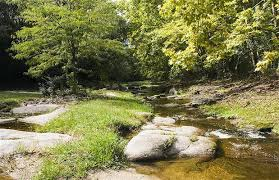
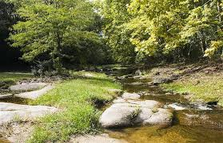

A unos 50 kilómetros de Córdoba Capital, Tanti se disfruta a través de un increíble entorno natural. Sobre su arroyo homónimo de aguas cristalinas se asienta casi una decena de balnearios para disfrutar en familia. Para chapuzones y descansos bajo el sol destacan El Diquecito, El Remanso y La Cascada, con un salto natural de casi ocho metros. Incluso, caminando se puede llegar a Piedras Lisas y al Pozo del Indio, dos paseos ideales para encontrar ollas de agua y otras cascadas.

Para los que deseen un poco más de aventura, el macizo Los Gigantes –con 2374 msnm– es ideal para practicar escalada. Para quienes opten por avistar cóndores y recorrer los márgenes del río Yuspe, el lugar indicado es la reserva Cerro Blanco. ¿Un infaltable? Una de las 7 maravillas naturales de Córdoba: la Cueva de los Pajaritos, que alberga múltiples especies de aves.
 
